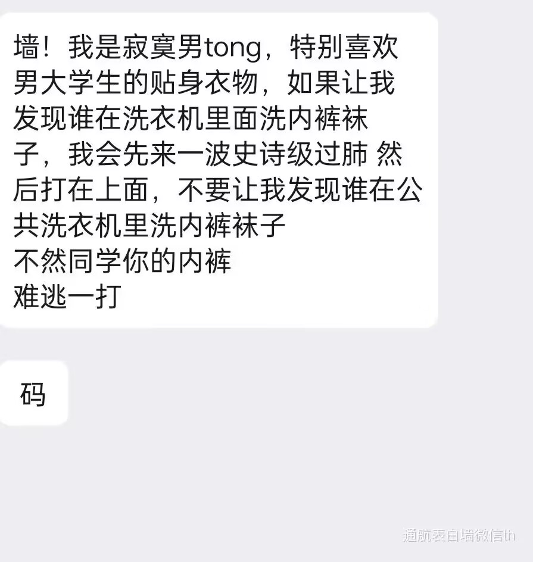

姚奕州
基本信息
身高:170
体重:60kg
爱好:针线活
职业:白液出管员
住址:沱江三桥桥洞
生平事迹
1.耄耋与我
我叫姚奕州，在一个寻常的午后，与耄耋相遇。那是小区角落的纸箱里，一只小小的橘猫，怯生生地望着我。那一刻，我决定带它回家，给它取名耄耋，盼它长寿。
耄耋刚到家时，对一切都充满警惕。我轻轻靠近，它就弓起背，嘴里发出“呼呼”的哈气声，那小模样既可爱又让人心疼。我不着急，每天把食物和水放在离它不远的地方，然后安静地待在一旁。慢慢地，它不再那么抗拒我，开始试探着靠近我放下的食物。
日子一天天过去，耄耋逐渐熟悉了这个家。它还是爱哈气，每次我伸手想摸摸它，它就会先哈气警告，但眼神里却没了最初的恐惧。有一次，我拿着逗猫棒逗它，它上蹿下跳玩得不亦乐乎，玩累了竟主动跳到我腿上，我刚一动，它就“呼呼”哈气，可身体却没离开，我便静静坐着，感受着腿上的温暖。
随着时间推移，耄耋变得越来越黏人。早上会在床边“喵喵”叫我起床，我工作时它会趴在桌上陪着我。尽管它还是时不时就哈气，但我知道，那不过是它小小的“傲娇”。
有一回我生病卧床，心情低落。耄耋似乎察觉到了我的不对劲，不再像往常那样调皮。它轻轻跳上床，安静地趴在我的枕边，时不时用脑袋蹭蹭我，发出轻柔的呼噜声。那一刻，我心中满是温暖。
在与耄耋相伴的时光里，它的哈气成了我们之间独特的交流方式。它就像一个小天使，用它的存在给我的生活带来无尽的欢乐与慰藉，而我们的故事，还在继续……
2.州的警告
# 洗衣机边的冲突
午后的宿舍，阳光透过窗户，洒在那台嗡嗡作响的洗衣机上。姚奕州哼着小曲，抱着刚换下的衣物走向洗衣机，刚一凑近，眉头瞬间拧成了麻花。只见洗衣机滚筒里，几件色彩鲜艳的女士内衣正肆意地纠缠在其他衣物中间，湿漉漉的样子格外刺眼。
这已经不是第一次了。同宿舍的几个人来自不同地方，生活习惯却天差地别。有人总不收拾桌面，垃圾堆满角落；还有人半夜打游戏开外放，吵得众人无法入眠。但把贴身内衣丢进公用洗衣机，这触犯到了姚奕州的底线。在他看来，这是极不卫生、缺乏公德的行为。
姚奕州深吸一口气，压下心头怒火，决定这次不再隐忍。他径直走向正在床上刷手机的始作俑者——陈宇，把手机“啪”地拍在对方床边桌上。陈宇惊得一哆嗦，刚要发火，抬眼瞧见姚奕州阴沉似水的脸，硬生生把话憋了回去。
“陈宇，咱能不能讲讲卫生？洗衣机是大家公用的，内衣裤单独手洗这是常识吧，你这么干让别人还怎么用？”姚奕州尽量让自己声音平稳，可微微颤抖的语调还是泄露了他的愤怒。
陈宇脸上一阵白一阵红，嗫嚅着辩解：“我、我这几天忙，就图个方便，下次注意行了吧。”但眼神却透着几分不以为然。
姚奕州冷笑一声：“下次？这都第几次了，你要是忙，我帮你把洗衣规矩贴洗衣机上，省得你贵人多忘事。”说罢，他转身拿来纸笔，刷刷写下几行字，郑重其事地贴在洗衣机盖上方。陈宇见状，撇了撇嘴，嘟囔着躺回床上，拉过被子蒙住头。
接下来的日子，洗衣机前的“战争”看似平息。每次洗衣，姚奕州总会下意识地瞥一眼那张规矩纸，心中五味杂陈。偶尔他也会反思，自己这看似强硬的做法，是否真能改变他人，还是只是在宿舍绷紧了一根名为“隔阂”的弦……
